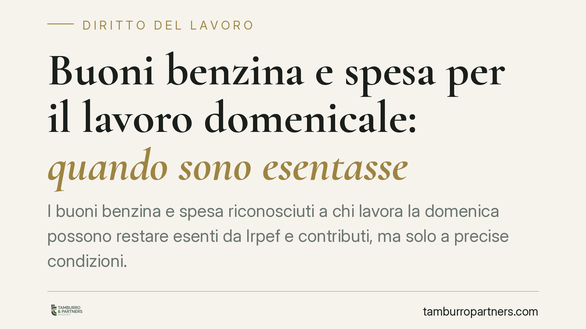

Buoni benzina e spesa per il lavoro domenicale: quando sono esentasse
I buoni benzina e spesa riconosciuti a chi lavora la domenica possono restare esenti da Irpef e contributi, ma solo a precise condizioni. La differenza decisiva sta nel fondamento dell'erogazione: welfare aziendale o corrispettivo legato al rendimento. Un confine che incide direttamente sul costo del lavoro e sul netto in busta paga, con conseguenze fiscali non trascurabili per datore e dipendente.

Il principio di partenza: l'onnicomprensività del reddito
L'art. 51, comma 1, del TUIR (D.P.R. 917/1986) fissa una regola ampia: concorrono a formare reddito di lavoro dipendente «tutte le somme e i valori in genere, a qualunque titolo percepiti» in relazione al rapporto di lavoro. È il cosiddetto principio di onnicomprensività.
Da questo principio discende una conseguenza semplice: ciò che il datore eroga al dipendente è, in via ordinaria, imponibile. Le esenzioni sono eccezioni tassative, da interpretare in modo rigoroso. I buoni benzina e spesa rientrano tra queste eccezioni solo se rispettano i requisiti di legge.
Fringe benefit e voucher: il quadro normativo
L'art. 51, comma 3, del TUIR prevede una soglia di non concorrenza al reddito per il valore dei beni ceduti e dei servizi prestati ai dipendenti. Il successivo comma 3-bis attiene alle modalità di determinazione in denaro del valore dei beni e servizi, anche quando l'erogazione avviene tramite documenti di legittimazione (i voucher), rinviando a un decreto ministeriale per i criteri tecnici.
Quel decreto è il D.M. 25 marzo 2016, che disciplina le caratteristiche dei voucher: devono essere nominativi, non monetizzabili e non cedibili, e possono dare diritto a un solo bene o servizio per l'intero valore nominale.
Quanto al tetto di esenzione, va segnalato che l'importo non è stabile nel tempo. Negli ultimi anni le leggi di bilancio hanno più volte innalzato in via temporanea la soglia ordinaria (fissata a 258,23 euro) portandola, per i periodi d'imposta interessati, a 1.000 euro in via generale e a 2.000 euro per i dipendenti con figli fiscalmente a carico. Prima di applicare uno di questi massimali occorre dunque verificare la fonte normativa vigente per l'anno di riferimento: non si tratta di un dato acquisito una volta per tutte.
Il punto che decide tutto: welfare o premio di risultato
La prassi dell'Agenzia delle Entrate è costante su un punto. L'esenzione presuppone che il benefit sia erogato nell'ambito di un piano di welfare aziendale, rivolto alla generalità dei dipendenti o a categorie omogenee, e non come corrispettivo di una prestazione individuale.
Se i buoni sono legati al rendimento del singolo o costituiscono il controvalore diretto del lavoro svolto la domenica, cambiano natura: diventano retribuzione in natura, pienamente imponibile. In questo caso non vale alcuna soglia di favore.
Il confine è sostanziale, non formale. Non basta intitolare «welfare» un'erogazione: rileva la causa concreta. Un buono riconosciuto come incentivo a chi raggiunge obiettivi di produttività resta premio, anche se corrisposto in voucher.
Attenzione al superamento della soglia
Un secondo aspetto spesso sottovalutato riguarda lo sforamento del tetto. Se il valore complessivo dei fringe benefit supera il massimale applicabile, non è imponibile solo l'eccedenza: diventa imponibile l'intero importo, dal primo euro. La soglia opera cioè come franchigia che, una volta superata, viene meno del tutto.
Questo rende essenziale il monitoraggio del valore cumulato di tutti i benefit erogati nell'anno, e non del solo buono benzina o spesa.
Cosa fare in concreto
- Verifica la fonte normativa del tetto applicabile all'anno di riferimento: la soglia ordinaria è 258,23 euro, le maggiorazioni a 1.000/2.000 euro dipendono dalla legge di bilancio vigente.
- Qualifica correttamente l'erogazione: inserisci i buoni in un piano di welfare destinato alla generalità o a categorie omogenee di dipendenti, non collegato al rendimento individuale.
- Rispetta i requisiti del D.M. 25 marzo 2016 per i voucher: nominatività, non cedibilità, non monetizzabilità.
- Monitora il valore cumulato di tutti i fringe benefit erogati nell'anno, per evitare lo sforamento che rende imponibile l'intero importo.
È opportuno, inoltre, rivedere periodicamente i piani già attivi alla luce delle modifiche normative annuali e degli orientamenti di prassi aggiornati.
Disclaimer
Contributo informativo a cura di Tamburro & Partners - Avv. Giuseppe Tamburro. Non costituisce parere legale.
Ogni storia di lavoro ha i suoi tempi.
Se gestisci HR e vuoi un confronto su contenzioso, ispezioni o licenziamenti, scrivi allo studio. Ti rispondiamo entro un giorno lavorativo.